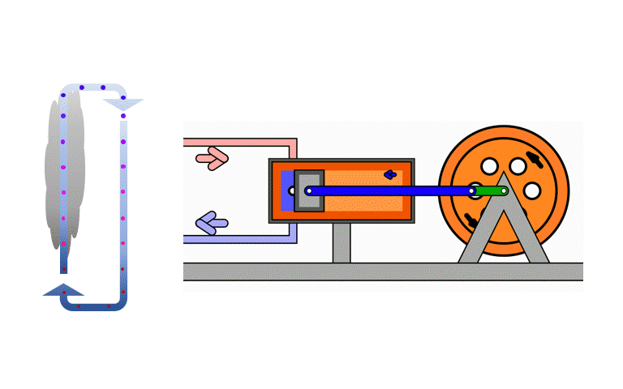

The origin of tropical congestus clouds
Congestus clouds are one of the 3 major cloud populations in the tropics
and are particularly important in the context of the local climate,
producing 25-40% of the total precipitation.
On average, congestus clouds reach heights of 5-6 km,
and therefore are the “middle child” with respect to
their smaller sibling the fair-weather cumulus cloud
and their larger sibling the stormy cumulonimbus cloud.
As lead author of a newly submitted study, we show that the
height at which congestus cloud tops form is directly
related to the ability of the atmosphere to radiatively cool.

Relaxation-oscillator convection on Earth and Titan
The global-mean precipitation rate on Earth today is remarkably steady,
indicating that moist convection – that is, air motion involving
the condensation of water – is an ongoing process across the globe.
If the Earth were 30 Celsius warmer, the weather would oscillate
between intense downpours and quiescent, dry periods.
Like a metronome, the storms that bring the torrential rains would
materialize and dissipate at regular intervals.
As lead author of a new study (in revision at PSJ), we show
that the critical temperature at which these oscillating
storms erupt is predicted by the breakdown of a thermodynamic heat engine
(not unlike the one in your car) model of convection.

Effects of saturation vapor pressure on climate, clouds, and convection
Aenean ornare velit lacus, ac varius enim lorem ullamcorper dolore. Proin aliquam facilisis ante interdum. Sed nulla amet lorem feugiat tempus aliquam.

A boundary layer model for single-component condensable atmospheres
Aenean ornare velit lacus, ac varius enim lorem ullamcorper dolore. Proin aliquam facilisis ante interdum. Sed nulla amet lorem feugiat tempus aliquam.

Feugiat lorem aenean
Aenean ornare velit lacus, ac varius enim lorem ullamcorper dolore. Proin aliquam facilisis ante interdum. Sed nulla amet lorem feugiat tempus aliquam.

Amet varius aliquam
Aenean ornare velit lacus, ac varius enim lorem ullamcorper dolore. Proin aliquam facilisis ante interdum. Sed nulla amet lorem feugiat tempus aliquam.